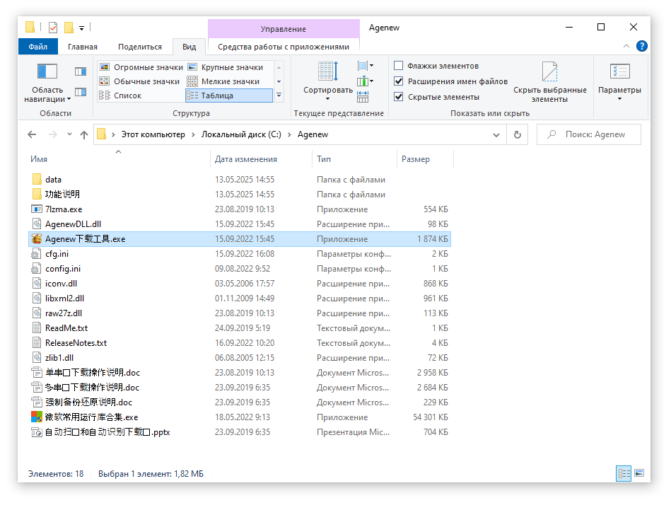
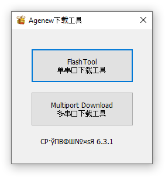
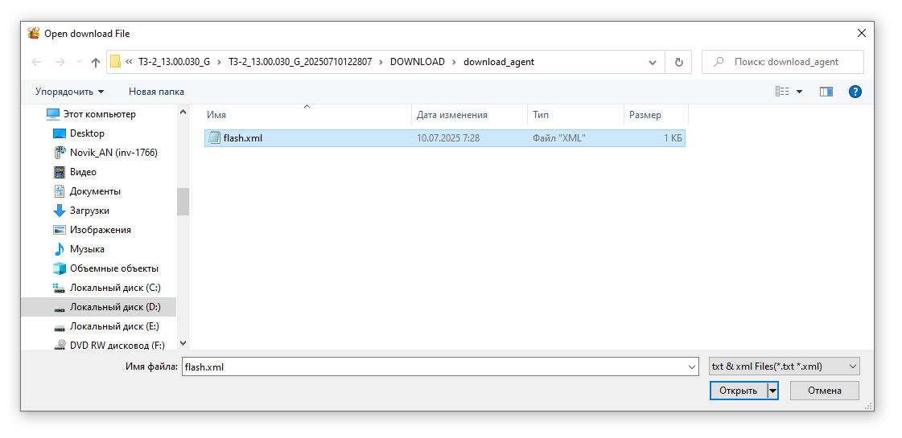
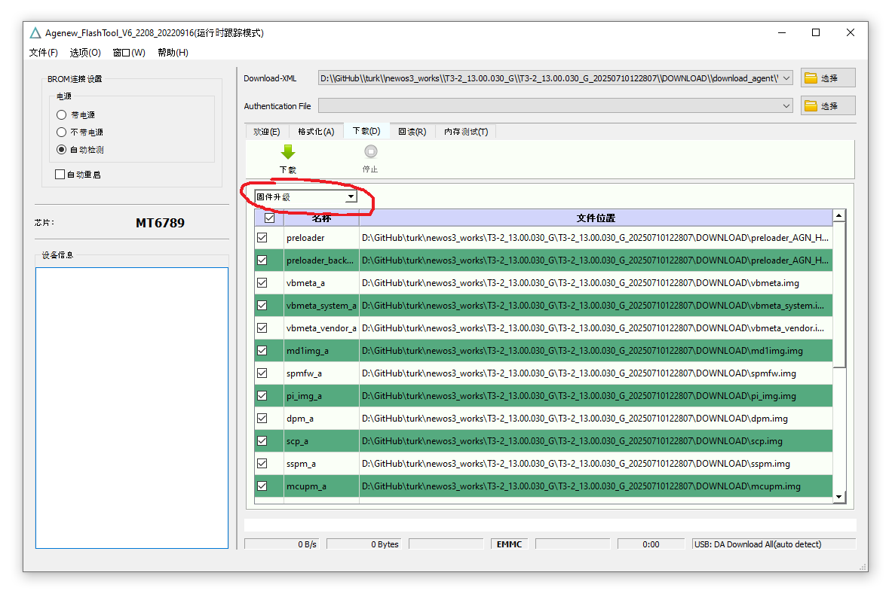
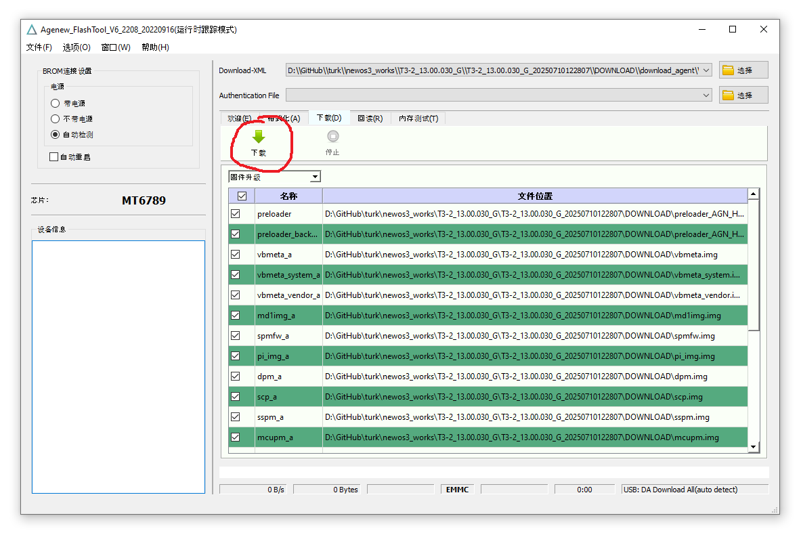
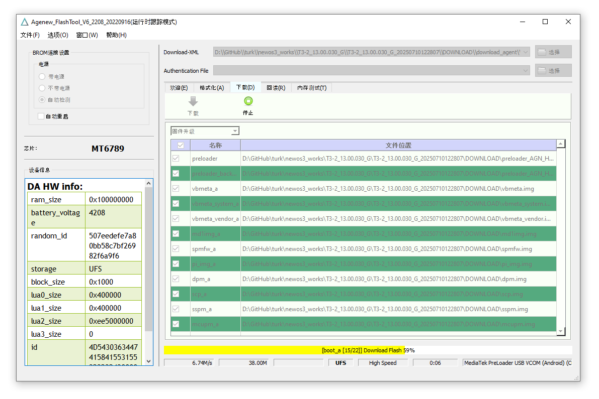
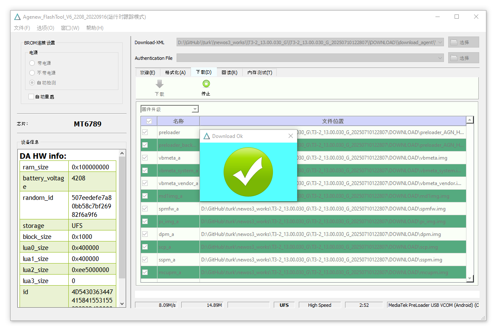

Прошивка iData T3Pro
(прошивка в которой всё работает: T3-2_13.00.030_G)
Драйвер, FlashTool и прошивку потом выложу на облако, пока есть только у меня
Драйвер, FlashTool и прошивку потом выложу на облако, пока есть только у меня
- Выключить смартфон (зарядка >50%). Не подключать к проводу, просто положить рядом
- Запустить приложение Agenev_FlashTool

Если файл Agenew下载工具.exe запускается с ошибкой, при выборе файла flash также ошибка и запуск от администратора не решает:
1. Скопировать папку Agenew (кстати раньше она называлась Agenew研发下载工具6.3.1 — так вообще не работало) в корень С:
2. Запустить. Никаких ошибок. Прошивается успешно - Выбрать FlashTool

- Выбрать: прошивка/DOWNLOAD/download_agent/flash.xml

- Из выпадающего списка выбрать 固件升级

- Нажать кнопку 下载 (зелёная стрелка)

- Подключить смартфон. Ничего нажимать не нужно, процесс запустится автоматом

- Ждать окончания
